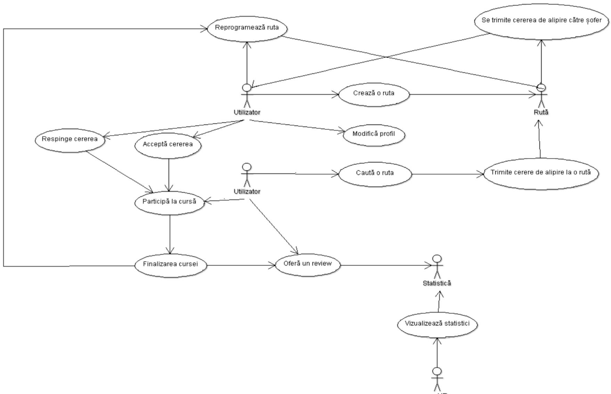
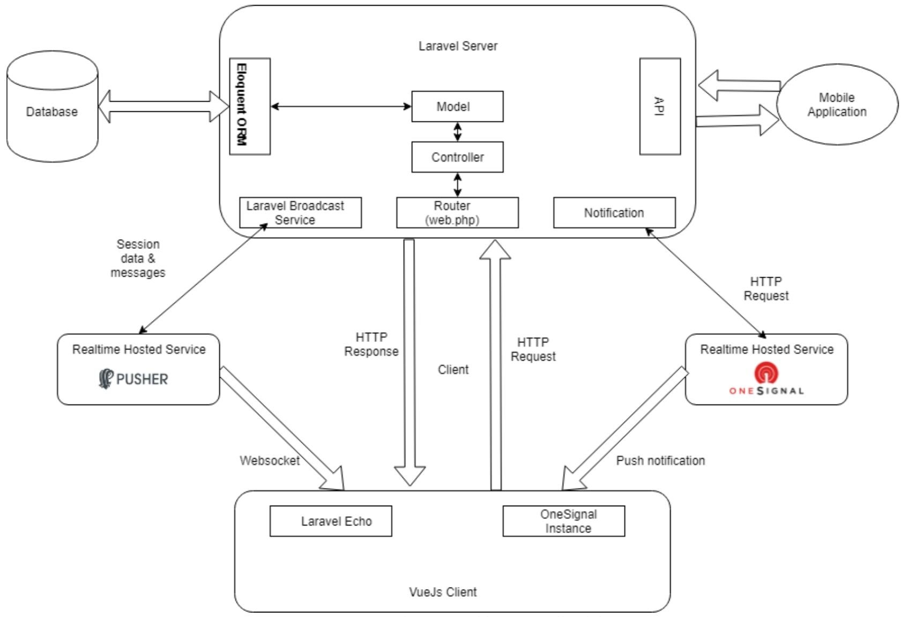
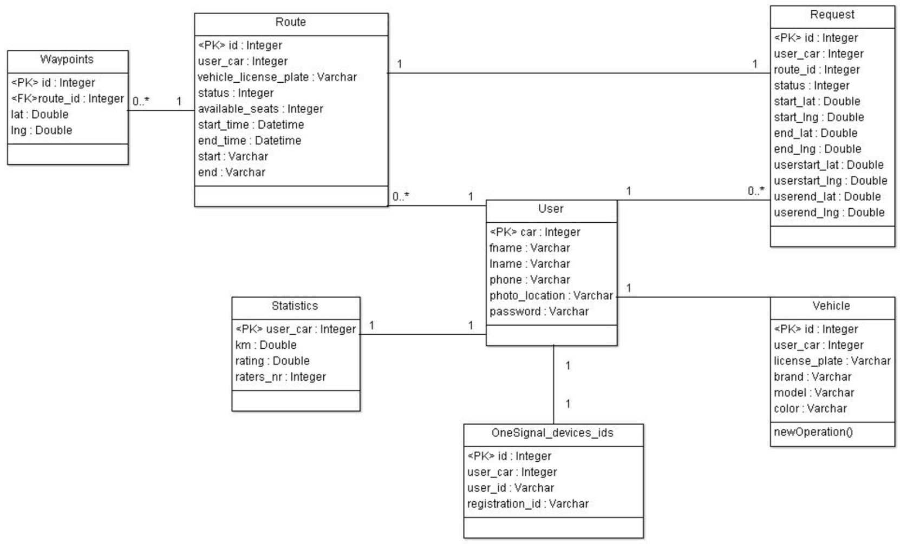
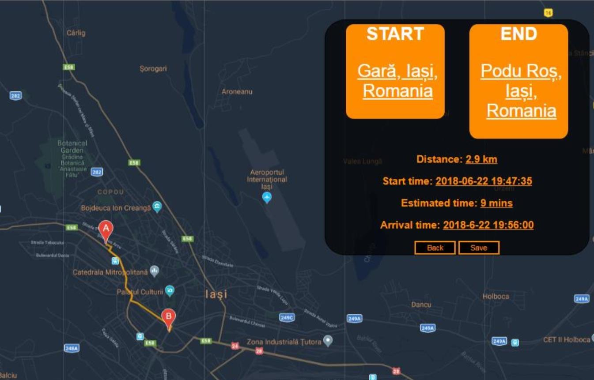
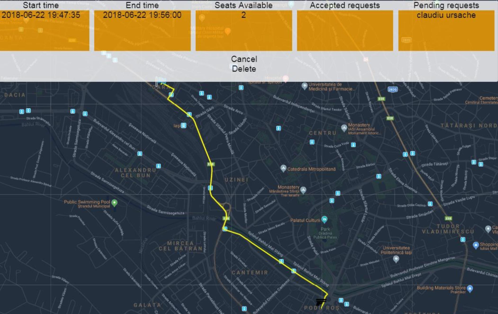

Data publicării: 15.08.2018
Autor articol: Sabin Buraga
Introducere
Articolul descrie un proiect software original – dezvoltat ca lucrare de licență în colaborare cu compania Continental – concretizat într-o aplicație care să vină în ajutorul organizațiilor dispuse să promoveze ideea de partajare a vehiculelor, în general, și a autoturismelor personale (car sharing), în special.
Atractivitatea sistemului de partajare a mașinii proprii este determinată de calitatea serviciului oferit și de costul aferent folosirii aplicației software. Calitatea serviciului este dată de numărul persoanelor care folosesc acest serviciu și de disponibilitatea posesorilor de autoturisme de a oferi locuri disponibile pe traseele pe care le practică, inclusiv ținând cont de distanța pe care este nevoit să o parcurgă un pasager până la întâlnirea cu un șofer și, respectiv, până la destinația finală. De asemenea, șoferii nu trebuie angrenați într-un proces anevoios de interacțiune cu sistemul dezvoltat.
Tema abordată se aliniază unei direcții de cercetare foarte importante, cu ample implicații mai ales practice – pentru diverse aspecte de interes, a se consulta (Degirmenci & Breitner, 2014) și (Bardhi & Eckhardt, 2012).
Aplicația proiectată, dezvoltată și exploatată în practică recurge la tehnologii Web și prezintă o interfață disponibilă pe telefoane mobile (i.e. Android).
Cerințe și scenariu de utilizare
Proiectul are drept scop oferirea unui serviciu calitativ cu impact substanțial în evitarea supraaglomerării parcărilor aferente firmelor dispuse să-l utilizeze și a descongestionării traficului din zona de interes.
Ca aspecte de interes se pot enumera:
- Oferirea unui traseu de transport al pasagerilor agreat de utilizatori implicați.
- Căutarea unui traseu urban menit a satisface nevoile utilizatorului.
Problemele identificate sunt următoarele:
- Atragerea unui volum mare de utilizatori care ofere mașini urmând trasee de interes.
- Găsirea unor modalități de a cupla utilizatorii la o rută dorită (e.g., drumul optim spre locul de muncă).
- Utilizarea unui algoritm de asociere la o rută care să nu producă inconveniente șoferului (de exemplu, o interacțiune ridicată între șofer și aplicația mobilă, forțarea șoferului să staționeze într-o zonă nepermisă cât se află în așteptarea pasagerilor etc.).
Sistemul propus are doi actori: utilizatorul obișnuit (șofer, pasager) și un utilizator care poate vizualiza și exporta în diferite formate statisticile create de aplicație – acestea sunt utile organizației pentru a evalua eficiența platformei și posibile probleme cauzate de anumiți utilizatori sau de factori externi (de pildă, accidente rutiere, locuri urbane deosebit de aglomerate ori dificil de parcurs, perioade de timp afectate de congestie rutieră și altele).
Un scenariu de utilizare tipică a aplicației este ilustrat de diagrama de mai jos.

Arhitectura sistemului
Din punct de vedere arhitectural, aplicația adoptă MVC (Model-View-Controller).
Funcționalitățile sunt oferite posibililor clienți (în cazul nostru, cu precădere aplicațiilor disponibile pe dispozitivele mobile) prin intermediul unei interfețe publice de programare – API (Application Programming Interface) – dezvoltată conform celor mai bune practici în domeniul tehnologiilor Web (Buraga, 2018).
Comunicarea dintre server și client se realizează fie prin intermediul cererilor HTTP, fie via socket-uri Web. Clientul adoptă principiile SPA (Single Page Application) descrise de (Monteiro, 2014), maniera de vizualizare a conținutului recurgând la o suită de componente Web, fiecare componentă fiind responsabilă să realizeze o anumită acțiune conform interacțiunii cu utilizatorul.
Din punct de vedere arhitectural, sistemul proiectat are următoarea structură ilustrată de diagrama de mai jos.

Aplicația dispune de o arhitectură modulară care permite adăugarea de facilități cu un impact minim asupra funcționalităților deja existente.
Tehnologiile care au ajutat la construirea infrastructurii de pe server sunt PHP și Laravel, un popular framework Web. Pentru managementul facil al datelor s-a adoptat o soluție ORM (Object Relational Mapping) și anume Eloquent ORM, modul inclus în Laravel.
Arhitectura bazei de date poate fi urmărită în schema alăturată.

Clientul a fost dezvoltat folosind framework-ul Vue.js. Accesul la datele cartografice externe s-a realizat via serviciul Google Maps, iar pentru notificarea în timp-real a utilizatorilor (e.g., sosirea unei mașini la punctul de rendez-vous sau anunțarea disponibilității unui autoturism) s-a recurs la serviciile Pusher și OneSignal.
Alte detalii, inclusiv cele privind maniera efectivă de implementare, sunt descrise în (Ventaniuc, 2018).
Studiu de caz
După autentificare și completarea datelor vizând profilul utilizatorului (șofer și/sau pasager), se poate adăuga o rută completând adresa de plecare și, respectiv, cea a destinației. Aplicația oferă suport pentru auto-completarea datelor. De asemenea, trebuie specificate: numărul de locuri disponibile ce pot fi ocupate de pasageri, data și timpul la care cursa va fi efectuată. Desigur, se poate selecta și vehiculul care va servi ca mijloc de transport.
După completarea acestor informații, ruta va fi afișată – a se studia captura-ecran de mai jos. Ruta poate fi modificată prin operații cu mouse-ul sau gestural. Informațiile despre rută vor fi actualizate în timp real, afișându-se noua distanță și noua estimare de timp. Evident, ruta specificată poate fi salvată. Aceste operații sunt realizate de către un anumit posesor de autovehicul (i.e. șofer).

Uzual, un pasager va intenționa să caute o rută de interes. Pentru aceasta, va putea completa un formular Web conținând câmpuri referitoare la locul de plecare, destinație, distanța maximă pe care utilizatorul va fi dispus s-o parcurgă mergând pe jos, plus intervalul de timp dorit. Platforma va afișa rutele disponibile, oferind informații folositoare pasagerului, inclusiv traseul pe care acesta va trebui să-l străbată pe jos (dacă există).
Șoferul va fi notificat asupra apariției unei cereri de asociere a unui pasager la ruta desfășurată curent, putând aproba sau nu disponibilitatea de a prelua acea persoană – a se vedea imaginea următoare. Punctul de întâlnire cu pasagerul poate fi, de asemenea, modificat.

După terminarea unei curse, pasagerul va putea completa o notiță de recenzie (feedback) referitoare la experiența desfășurării transportului, evaluând șoferul cu un punctaj de la 1 la 5.
Suplimentar, aplicația oferă suport pentru reprogramarea unei curse deja efectuate.
Cele descrise anterior reprezintă aspectele cele mai importante descrise în cadrul lucrării de licență susținute la Facultatea de Informatică de către absolventul Vladimir Ventaciuc, avându-l drept coordonator pe Dr. Sabin-Corneliu Buraga.
Referințe bibliografice
- Bardhi, F., Eckhardt, G. M., “Access-based consumption: The case of car sharing”, Journal of consumer research, 39 (4), 2012.
- Buraga, S., Tehnologii Web, Facultatea de Informatică, Universitatea “Alexandru Ioan Cuza” din Iași, 2018: http://profs.info.uaic.ro/~busaco/teach/courses/web/web-film.html
- Degirmenci, K., Breitner, M. H. Carsharing: A literature review and a perspective for information systems research, In Beckmann, Lars (Ed.), Multikonferenz Wirtschaftsinformatik (MKWI 2014), 26-28 February 2014, Paderborn, Germany, 2014.
- Monteiro, F., Learning Single-page Web Application Development, Packt Publishing, 2014.
- Ventaniuc, V., Platformă Web pentru partajarea autoturismelor în context urban (CUBER), Teză de licență, Facultatea de Informatică, Universitatea “Alexandru Ioan Cuza” din Iași, 2018.
- * * *, Building Real-Time Laravel Apps with Pusher, 2018: http://pusher-community.github.io/real-time-laravel/index.html
- * * *, Laravel Documentation, 2018: http://laravel.com/docs/
- * * *, OneSignal Documentation, 2018: http://documentation.onesignal.com/docs
- * * *, Vue.js Guide, 2018: http://vuejs.org/v2/guide/